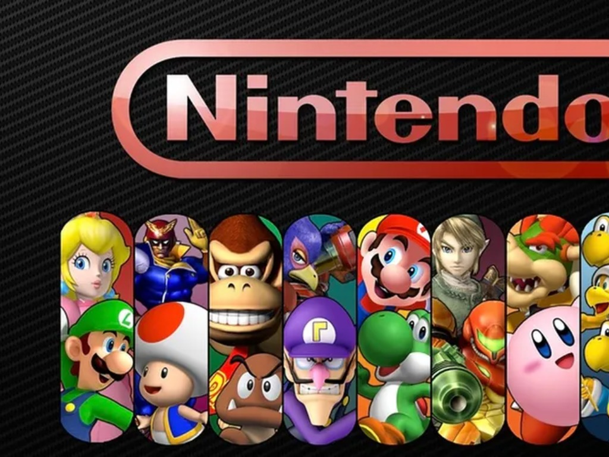

Nintendo (яп. 任天堂株式会社 Нинтэндо: кабусики-гайся)

Nintendo — японская компания, специализирующаяся на создании видеоигр и игровых систем, со штаб-квартирой в Киото. Компания была основана в 1889 году ремесленником Фусадзиро Ямаути под названием Nintendo Karuta и первоначально производила игральные карты ручной работы «ханафуда».
С тех пор Nintendo выпустила несколько самых успешных игровых систем, таких как
- Game Boy
- Super Nintendo Entertainment System
- Nintendo DS
- Wii
- Nintendo Switch
История. Начало
- Компания Nintendo была основана 23 сентября 1889 года ремесленником Фусадзиро Ямаути в Симогё-ку, Киото, Япония, под названием Nintendo Karuta для производства и распространения «ханафуда» — японской разновидности игральных карт «Карута[en]». Принято считать, что название «Нинтендо» означает «оставить удачу небесам», но это предположение не имеет исторического подтверждения; название также можно перевести как «храм свободной ханафуды».
- Компания начала выпускать игральные карты «Ханафуда» в особом японском стиле (они были нарисованы вручную), которые быстро завоевали популярность, и компания прочно закрепилась на японском рынке игрушек. У Ямаути не было сына, которому он смог бы передать по наследству семейный бизнес, поэтому, следуя древней японской традиции, он назначил преемником своего будущего зятя Сэкирё Канэду (1883—1949). Тому пришлось взять девичью фамилию супруги и стать Сэкирё Ямаути.
- В 1947 Сэкирё основал компанию «Маруфуку», чтобы распространять карты «Ханафуда», а также несколько других брендов карт, которые были введены «Nintendo». У Сэкирё, как и у его тестя, тоже были только дочери, из-за чего его зятю Сиканодзё Инабе тоже пришлось взять девичью фамилию жены, став, таким образом, Сиканодзё Ямаути. Однако отношения не заладились, и Сиканодзё, так и не успев занять президентское кресло, ушёл из семьи, бросив жену и детей. Его единственному сыну Хироси в 22 года, несмотря на то что ему изначально не хотелось этого делать, пришлось занять должность управляющего директора «Nintendo», когда у Сэкирё (после ухода Сиканодзё он и его дочь сами занимались воспитанием Хироси и его сестёр) начались серьёзные проблемы со здоровьем.
- В 1963 году Nintendo Playing Card Company Limited была переименована в Nintendo Company, Limited.
В 1970-х годах, благодаря разработкам инженера Гумпэй Ёкои, в особенности его игрушке «The Ultra Hand», компания Nintendo приступила к созданию игрушек для детей и построила собственную игрушечную фабрику. Гумпэй Ёкои после успеха игрушки «The Ultra Hand» был переведён из отдела обслуживания на разработку.
- Поскольку Ёкои был инженером, он разрабатывал и электронные игрушки. Они были достаточно новы на то время по сравнению с традиционными, что позволило Nintendo получать большую прибыль. Ёкои разработал множество игрушек, например пазл Ten Billion Barrel, бейсбольную машинку, названную Ultra Machine и «Love Tester». Одним же из изобретений, сделанных совместно с Масаюки Уэмурой, была игра Nintendo Beam Gun Game, предок NES Zapper.
<Больше информации в Википедии

Выручка компании в финансовом году, закончившемся 31 марта 2013 года, составила 635,4 млрд иен ($6,4 млрд), чистая прибыль — 7,1 млрд иен ($72 млн.).